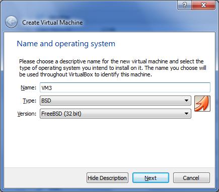
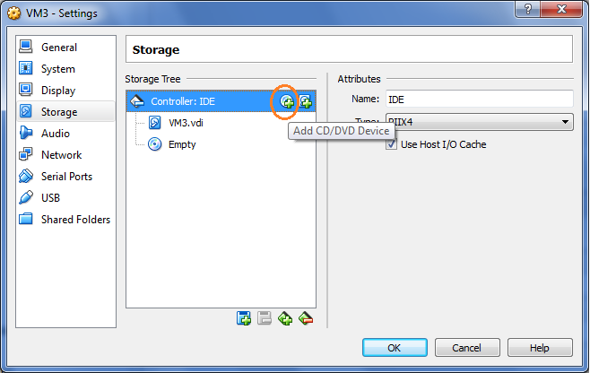
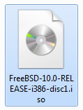
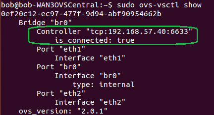
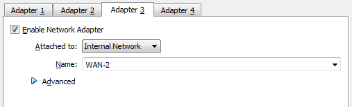
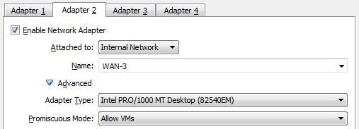
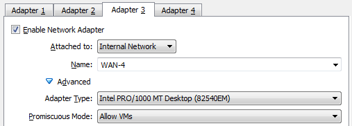
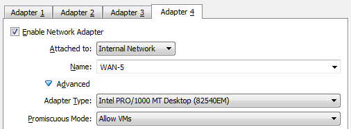
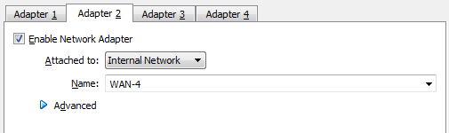
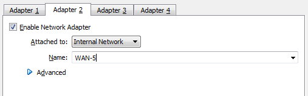

Build a Lab
Contents:
Pre-Requisites
Base Ubuntu VM Build
Base FreeBSD VM Build
VM1 Server / Controller
VM2 Central Open vSwitch
VM3 WAN Simulation
VM4 Remote Open vSwitch
VM5 Client Host 1
VM6 Client Host 2
Introduction
Want to experiment with nmeta and OpenFlow SDN, but don't have any switches? No problem. You can build a simple, but powerful, lab within a virtualised environment. These instructions should hopefully save you a lot of time figuring out the more obtuse features. Oracle VirtualBox is used as the hypervisor. Here is a logical diagram of the environment

Pre-Requisites
- Oracle VirtualBox installed on a suitable host machine
- Host must have sufficient RAM (test PC was Windows 7 with 8GB RAM)
Base Ubuntu VM Build
Here we build a base Ubuntu VM image which we can clone to make most of the other guests.
First, download a suitable supported Ubuntu desktop distribution. In VirtualBox, create a new Ubuntu guest with 1024MB of RAM and 12GB of storage. Consider creating the hard disk as fixed size to improve performance.


Go into the guest settings to configure it to boot off the ISO. Under Storage, click on the Controller: IDE row and then click on the Add CD/DVD Device Icon, "Choose disk" and browse to the ISO:


Do the same process to add the ISO for the Guest Additions. On Windows it is located in C:\Program Files\Oracle\VirtualBox\VBoxGuestAdditions.iso

As above, there should now be two ISO files associated.
Start the VM and install Ubuntu as per the defaults (or your own preferences!)
Install VirtualBox Additions
Once the build is completed and the guest is running, log in and start a terminal window (CTRL+ALT+T). Install the VirtualBox additions for improved host-guest integration:
cd /media
Look for the appropriate subdirectories that contain the correct additions version. Example:

Run the additions:
sudo ./VBoxLinuxAdditions.run
Restart the guest to bring the additions online. You may also want to change the copy/paste settings in VirtualBox to allow pasting to the guest:

Base FreeBSD VM Build
Here we build a base FreeBSD VM image which we can clone to make a Dummynet WAN simulation guest. We use FreeBSD for this role over Ubuntu, as FreeBSD has Dummynet built into the distribution.
First, download a suitable supported FreeBSD ISO (note: tested version was 10.0). Create a new BSD guest:

Choose 256MB of RAM and the default storage options and a new VM will be created.
Go into the guest settings to configure it to boot off the ISO. Under Storage, click on the Controller: IDE row and then click on the Add CD/DVD Device Icon (circled in orange in screenshot below):

Browse to the location of the ISO:

Start the VM and install OS. Once built, shut the VM down and remove the ISO from the Storage setting otherwise it will try and rebuilt when started.
VM1 Server / Controller
This will be the central server that runs the Ryu SDN controller and nmeta.
Start by making a clone of the base Ubuntu VM and call it something suitable.
Configure Networking
Go into the Network settings and leave Adapter 1 as per defaults to allow NAT access to the Internet (required for downloading software packages from the Internet). Configure Adapter 2 as per screenshot below to connect to Internal Network "WAN-1":

Edit /etc/network/interfaces:
sudo vi /etc/network/interfaces
Add the following:
auto eth1
iface eth1 inet static
address 192.168.57.40
netmask 255.255.255.0
#
up route add -net 192.168.56.0/24 gw 192.168.57.1 dev eth1
Restart networking:
sudo /etc/init.d/networking restart
Now, install Ryu, nmeta etc as per instructions on the Installation Page
VM2 Central Open vSwitch
This will be the central Open vSwitch that connects the server to the WAN simulator.
Start by making a clone of the base Ubuntu VM and call it something suitable.
Configure Guest Network Adapters
Go into the Network settings and leave Adapter 1 as per defaults to allow NAT access to the Internet (required for downloading software packages from the Internet). Configure Adapter 2 and 3 as per screenshots below, noting that promiscuous mode MUST be changed to "Allow VMs". This mode is required to allow the guest to function as a switch.


Install Open vSwitch
Install openvswitch-common and openvswitch-switch (both in same package):
sudo apt-get install openvswitch-switch
Check that it is running:
sudo ovs-vsctl show
Set up bridge 'br0':
sudo ovs-vsctl add-br br0
Add physical interfaces:
sudo ovs-vsctl add-port br0 eth1
sudo ovs-vsctl add-port br0 eth2
Edit /etc/network/interfaces:
sudo vi /etc/network/interfaces
Add the following:
auto br0
iface br0 inet static
address 192.168.57.3
network 192.168.57.0
netmask 255.255.255.0
broadcast 192.168.57.255
gateway 192.168.57.1
#
up route add -net 192.168.56.0/24 gw 192.168.57.1 dev br0
Now, do a full restart of the guest.
Configure Open vSwitch
Check connectivity to the OpenFlow controller:
ping 192.168.57.40
On VM1, start Ryu OpenFlow Controller:
cd ryu
PYTHONPATH=. ./bin/ryu-manager --verbose ryu/app/simple_switch.py
On VM2, set Open vSwitch to contact Controller:
sudo ovs-vsctl set-controller br0 tcp:192.168.57.40:6633
Check Open vSwitch connectivity to OpenFlow Controller:
sudo ovs-vsctl show
Here is output showing successful connection with the controller:

VM3 WAN Simulation
VM3 is used to simulate a WAN, with configurable bandwidth, delay and packet loss.
Start by making a clone of the base FreeBSD (not Ubuntu) VM and call it something suitable.
Configure Networking
Go into the Network settings and leave Adapter 1 as per defaults to allow NAT access to the Internet (required for downloading software packages from the Internet). Configure Adapter 2 as per screenshot below to connect to Internal Network "WAN-3":
Configure Adapter 3 as per screenshot below to connect to Internal Network "WAN-2":

Start the VM and configure networking by editing /etc/rc.conf and adding these lines:
ifconfig_em1="inet 192.168.56.1 netmask 255.255.255.0"
ifconfig_em2="inet 192.168.57.1 netmask 255.255.255.0"
#
# Enable IP Routing:
gateway_enable="YES"
#
# Enable IPFW (used for Dummynet):
firewall_enable="YES"
firewall_type="open"
firewall_script="/etc/ipfw.rules"
Enable Kernel Support for Dummynet by modifying the /boot/loader.conf file:
dummynet_load="YES"
Configure Dummynet by creating a new file /etc/ipfw.rules:
ipfw -q flush
ipfw add pipe 1 ip from any to any
ipfw pipe 1 config delay 10ms bw 2Mbit/s plr 0
The bandwidth can be any of bit/s, Kbit/s, Mbits/s, Byte/s, KByte/s, MByte/s. A bandwidth of zero results in no bandwidth limitation.
Note that the rule is applied 4 times as the request packet is received and sent out and the reply is received and sent out, i.e. 10ms configured is 40ms RTT.
Make config live:
service ipfw restart
Check with:
ipfw pipe 1 show
VM4 Remote Open vSwitch
This will be the remote Open vSwitch that connects client hosts to the WAN simulator.
Start by making a clone of the base Ubuntu VM and call it something suitable.
Configure Guest Network Adapters
Go into the Network settings and leave Adapter 1 as per defaults to allow NAT access to the Internet (required for downloading software packages from the Internet). Configure Adapters 2, 3 and 4 as per screenshots below, noting that promiscuous mode MUST be changed to "Allow VMs". This mode is required to allow the guest to function as a switch.



Install Open vSwitch
Install openvswitch-common and openvswitch-switch (both in same package):
sudo apt-get install openvswitch-switch
Check that it is running:
sudo ovs-vsctl show
Set up bridge 'br0':
sudo ovs-vsctl add-br br0
Add physical interfaces:
sudo ovs-vsctl add-port br0 eth1
sudo ovs-vsctl add-port br0 eth2
sudo ovs-vsctl add-port br0 eth3
Edit /etc/network/interfaces:
sudo vi /etc/network/interfaces
Add the following:
auto br0
iface br0 inet static
address 192.168.56.3
network 192.168.56.0
netmask 255.255.255.0
broadcast 192.168.56.255
gateway 192.168.56.1
#
up route add -net 192.168.57.0/24 gw 192.168.56.1 dev br0
Now, do a full restart of the guest.
Configure Open vSwitch
Check connectivity to the OpenFlow controller:
ping 192.168.57.40
On VM1, start Ryu OpenFlow Controller:
cd ryu
PYTHONPATH=. ./bin/ryu-manager --verbose ryu/app/simple_switch.py
On VM4, set Open vSwitch to contact Controller:
sudo ovs-vsctl set-controller br0 tcp:192.168.57.40:6633
Check Open vSwitch connectivity to OpenFlow Controller:
sudo ovs-vsctl show
VM5 Client Host 1
This will be the a remote PC called pc1 that belongs to the Dev division of example.com
Start by making a clone of the base Ubuntu VM and call it something suitable.
Configure Networking
Go into the Network settings and leave Adapter 1 as per defaults to allow NAT access to the Internet (required for downloading software packages from the Internet). Configure Adapter 2 as per screenshot below to connect to Internal Network "WAN-4":

Edit /etc/network/interfaces:
sudo vi /etc/network/interfaces
Add the following:
auto eth1
iface eth1 inet static
address 192.168.56.11
netmask 255.255.255.0
#
up route add -net 192.168.57.0/24 gw 192.168.56.1 dev eth1
Restart networking:
sudo /etc/init.d/networking restart
Edit the /etc/hostname file:
pc1
Update the entry in /etc/hosts file for 127.0.1.1 as follows:
127.0.1.1 pc1.dev.example.com pc1
VM6 Client Host 2
This will be the a remote PC called pc2 that belongs to the Audit division of example.com
Start by making a clone of the base Ubuntu VM and call it something suitable.
Configure Networking
Go into the Network settings and leave Adapter 1 as per defaults to allow NAT access to the Internet (required for downloading software packages from the Internet). Configure Adapter 2 as per screenshot below to connect to Internal Network "WAN-5":

Edit /etc/network/interfaces:
sudo vi /etc/network/interfaces
Add the following:
auto eth1
iface eth1 inet static
address 192.168.56.12
netmask 255.255.255.0
#
up route add -net 192.168.57.0/24 gw 192.168.56.1 dev eth1
Restart networking:
sudo /etc/init.d/networking restart
Edit the /etc/hostname file:
pc2
Update the entry in /etc/hosts file for 127.0.1.1 as follows:
127.0.1.1 pc2.audit.example.com pc2
The lab build is finished!